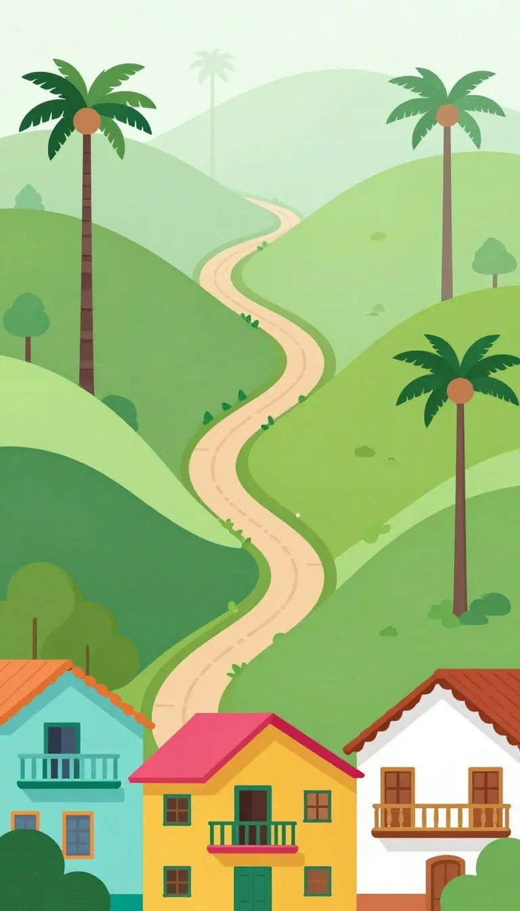
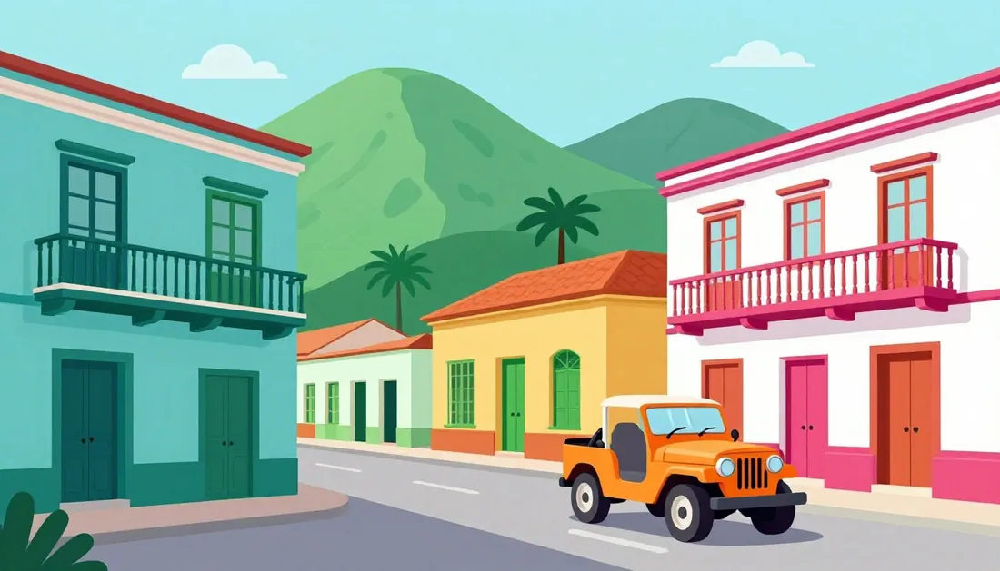

Font pairing
A rounded, playful face for headings and buttons, and a highly legible face for every Spanish word. Try each pairing: the whole page switches. Your choice is saved and also used by the app.
Colour
Taken from Salento's painted balconies: turquoise, magenta, mustard, emerald and terracotta, on warm cream. The 600 shades carry white text; the 50 shades are tinted backgrounds.
Semantic roles
Contrast (WCAG AA needs 4.5:1 for text)
Type scale
Spanish prompts are never smaller than 24px on a phone. New words are 30px. Glyph check: every accent, ñ, ü, ¿ and ¡ must be unmistakable, and I, l and 1 must all look different.
Components
Everything you can press has a darker bottom edge. On press, the face slides down onto the edge (a transform, so nothing around it moves). Tap targets are at least 48px.
Feedback sheets
After CHECK, a sheet slides up over the footer. The CONTINUE button lands exactly where CHECK was, so your thumb doesn't move. Green for right, warm terracotta for "not yet", never harsh red. Buhísimo reacts.
Path pieces
Chromebook and desktop
The same app and lessons; only the layout adapts. Phones (under 700px) keep the single column. Tablets (700–1023px) keep the top bar and centre the path. From 1024px the path gets a left sidebar and a right progress panel; from 1280px the sidebar shows labels, below that it is an icon rail. Lessons sit on a centred 720px stage with a full-width bottom bar.
Lesson bottom bar (700px and wider)
Secondary actions on the left, CHECK on the right. The feedback sheet spans the full width, and CONTINUE lands exactly where CHECK was. On phones the bar is one full-width button, as before. Narrow this window to see it.
Keyboard
1–9 pick an option or a word tile · in matching pairs 1–5 are Spanish and 6–0 English
Enter CHECK, then CONTINUE · Backspace takes the last tile back · Esc opens “Leave the lesson?” (and closes dialogs)
Tab moves through everything in reading order, with a magenta focus ring. Typing works with real accented letters or the accent bar (á é í ó ú ñ ü ¿ ¡). Number badges only appear on devices with a mouse, trackpad or keyboard, never on touch screens.
Characters and scenes
Cut out from the generated art (transparent WebP, each under 150 KB). Buhísimo is the species-accurate spectacled owl: round head, no ear tufts.


Spacing, radius, shadow, motion
Voice and tone
Do
- Praise specifically and briefly: "Accents and ñ matter."
- Treat mistakes as normal: "Mistakes help you learn."
- Bring wrong answers back later, kindly: "We'll come back to this one."
- Spanish praise only with words the student already knows (in 1.1, Buhísimo's own name).
Don't
- No "Wrong!", buzzers, lost hearts or shaming streak warnings.
- No red as the only signal: always an icon and words too.
- No Spanish the student hasn't met (the vocabulary checker enforces this).
- No jokes at a character's expense: jokes come from their own traits.